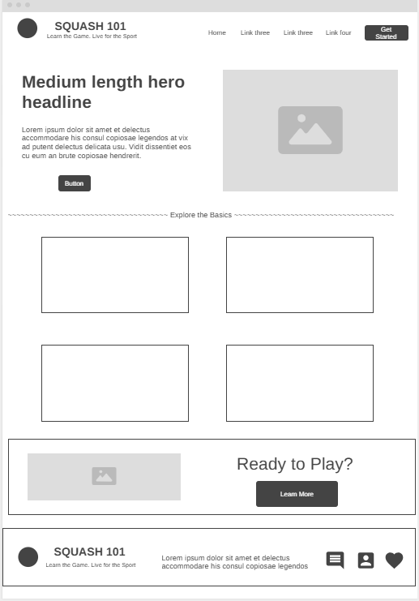
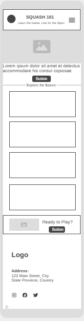

Website Planning Document
1. Site Name
Squash 101
I chose this name because it shows that the website is for beginners. The purpose is to help people who are new to squash understand the game and learn how to play. The name is simple, easy to remember, and welcoming to beginners.
Tagline: Learn the Game. Love the Sport.
Suggested domain: squash101.com
Learn the Game. Love the Sport.
2. Site Purpose
The purpose of this website is to introduce people to the sport of squash and help beginners learn the basics. It will provide information about the rules, scoring, courts, equipment, and basic techniques.
3. Scenarios
These are questions that visitors to the website might ask:
- What is Squash?
- What equipment do I need to start playing squash?
- How does the scoring system work in squash?
- What are the basic rules of squash?
- How do I perform basic squash shots?
- What are some tips for someone who has never played squash?
4. Color Schema
I chose a green and neutral color scheme to give the website a clean, modern, and sporty appearance. The colors work well together without any contrast errors.
Dark Green
#142C27
Used for the header, navigation, and main headings.
Forest Green
#315B48
Used for buttons, links, and section accents.
Cream
#F4F3ED
Used for the main page background.
Sage
#D5E6D8
Used for cards, highlights, and backgrounds.
5. Typography
I chose two fonts that are easy to read and work well together. Montserrat will give the headings a bold and sporty appearance, and Roboto will make the body text clear and comfortable to read.
Montserrat
Used for the main title, headings, and subheadings.
Roboto
Used for paragraphs, lists, and general website content.
6. Wireframes
The following wireframes show the planned layout of the home page on a mobile device and a larger desktop screen. The design will use a simple layout that is easy to navigate on different screen sizes.
Desktop View

Mobile View
